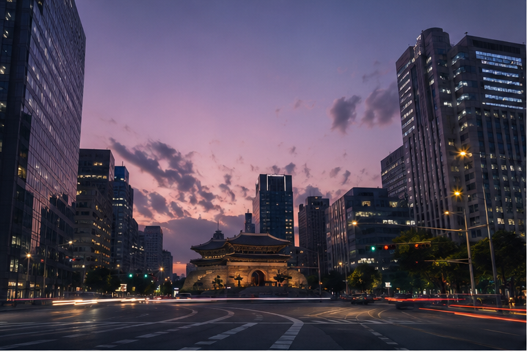
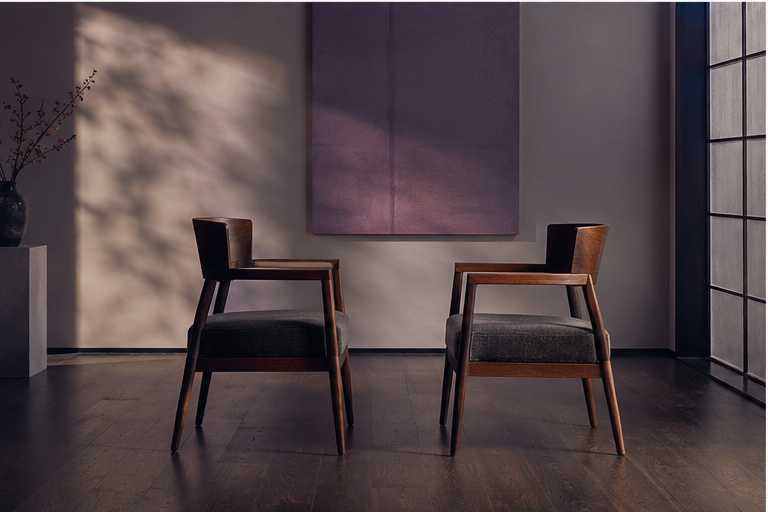
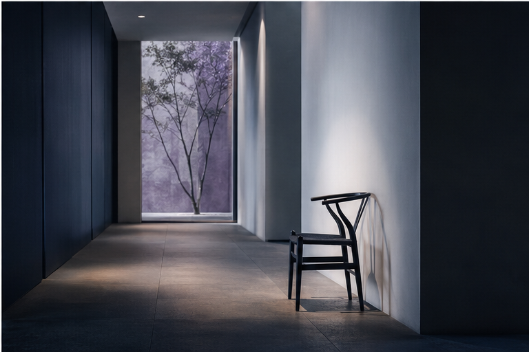
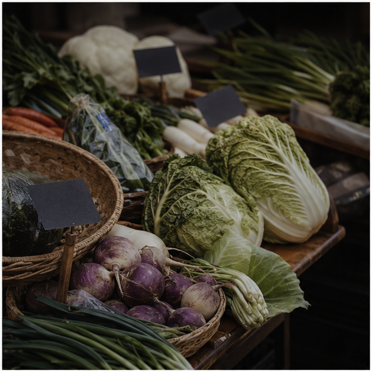
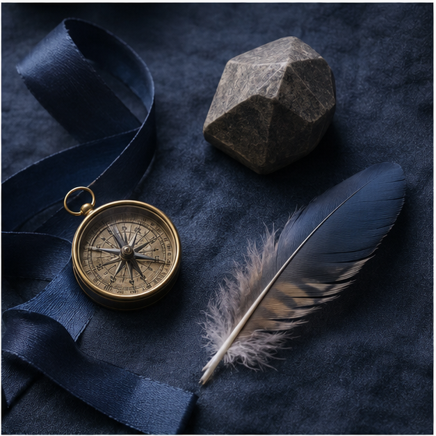
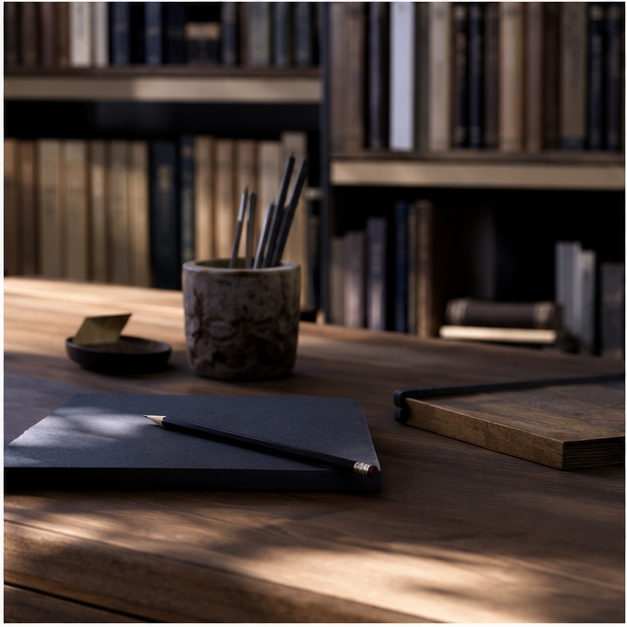
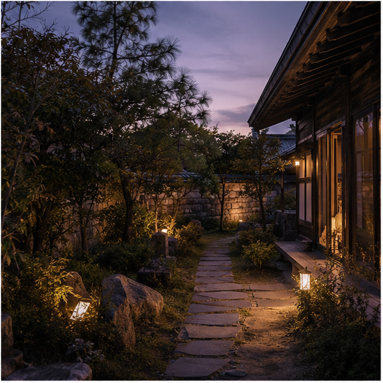

4th Season 안내
이 공간이 만들어진 이유와 6 Re:Lenz + Note + HAVE+의 전체 흐름을 먼저 읽습니다.
안내 읽기 →
서로 다른 질문과 글이 흩어지지 않도록, 세상을 읽는 여섯 개의 렌즈와 삶을 돌보는 도구를 한곳에 모았습니다.
지도 둘러보기 ↓4th Season은 글을 나열하는 곳이 아니라, 사회·고전·관계·철학·경제·상징을 서로 다른 렌즈로 비추는 아카이브입니다. 지금의 질문에 가까운 장면을 골라 한 장의 지도로 들어가면 됩니다.
사진은 각 지도가 다루는 장면의 결을 먼저 보여 주고, 카드는 그 안으로 들어가는 첫 문이 됩니다.

사건과 현상, 관계와 권력의 언어로 현재를 읽습니다.
지도 열기 →오래된 책과 문장을 오늘의 삶에 다시 놓아 봅니다.
지도 열기 →
사람 사이에서 말의 뜻이 어떻게 달라지는지 살핍니다.
지도 열기 →
낯선 철학 개념을 현실의 질문으로 풀어 봅니다.
지도 열기 →
세상이 무엇에 값을 매기고 교환하는지 읽습니다.
지도 열기 →
색과 숫자, 사물과 장면에 쌓인 뜻을 읽습니다.
지도 열기 →
문해력과 어휘, 읽기와 쓰기의 기초를 다시 세웁니다.
영역 열기 →
몸과 마음, 관계와 시간을 삶의 결로 다시 살핍니다.
영역 열기 →